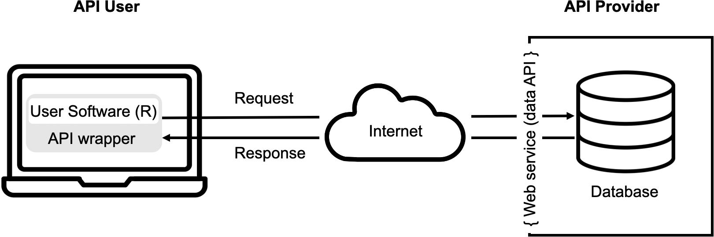

Was ist eine API?¶
API steht für “Application Programming Interface” und bezeichnet eine Programmierschnittstelle. Diese Schnittstelle dient dazu, Daten zwischen einer Softwareanwendung und einer anderen auszutauschen. So eine Software kann natürlich auch ein R- Skript sein mit dem Sie auf eine andere Anwendung zugreifen wollen. Der Austausch geschieht über zuvor definierte Befehle, die Syntax der API.
Im Kontext dieses Tutorials beschäftgen wir uns mit Web APIs, also mit Schnittstellen, die Onlinedienstleister zum Zweck des Datenaustausches und der Datenverarbeitung zur Verfügung stellen. Es soll aber kurz erwähnt werden, dass der Begriff API natürlich eigendlich etwas breiter ist. In diesem Tutorial beschäftigen wir uns außerdem vor allem mit einem ganz bestimmten Typ von API, der REST-API heißt.
Welche APIs gibt es?¶
Es gibt im Internet viele Dienstleister, die Daten zur Verfügung stellen, die aus kommunikationswissenschaftlicher Sicht interessant sind. Eine Liste wäre schier endlos. Generell gilt: Bevor man mit dem Scraping einer Website beginnt, sollte man erstmal recherchieren ob es vielleicht eine API dafür gibt.
Es gibt einige Online-Verzeichnisse, auf denen APIs gelistet sind:
Solche Verzeichnisse können aber natürlich niemals vollständig sein.
Aufgabe¶
Recherchieren Sie bis zur nächsten Woche eine API, die Sie aus Kommunikationswissenschaftlicher Sicht interessant finden. Für welchen Forschungszweck könnten Sie sie einsetzen?
Logik von APIs¶
Die Grundlogik von APIs ist schnell erklärt: Der API-Provider richtet einen Service ein, der Zugriff auf seine Datenbank gewährt. Er definiert natürlich auch auf welche Daten genau zugegriffen werden kann und über welche Syntax der Zugriff zu erfolgen hat. Der Prozess des Zugriffs über die API ist in der nachfolgenden Abbildung dargestellt.
Auf der Seite des Users muss man diese Syntax natürlich kennen. Wenn man über die API zugreifen möchte, sendet man ein “Request” über das Internet an die Schnittstelle des Providers. Auf Seiten des Providers wird der Befehl dann ausgeführt und eine entsprechende Antwort zurückgeschickt. Diese Antwort kann Daten ganz unterschiedlichen Datei-Formate enthalten. Sehr häufig kommen z.B. das JSON oder XML-Format vor. Die Response beinhaltet aber auch Informationen über die Transaktion selbst z.B. Fehlermeldungen.
Unter Umständen ist es notwendig, auf Seiten der User-Software mit einem API-Wrapper zu arbeiten, weil ein Programm oder in unserem Fall die Programmiersprache R nicht direkt in der API-Sprache kommunizieren kann. Da die API im Detail vom API-Provider festgelegt wird, wäre es auch etwas viel verlangt jede API zu kennen. Bei Wrappern handelt es sich um Funktionen, die die Details des API-Zugriffs regeln.
Da APIs nicht nur von Computern, sondern auch von Anwendern verstanden werden müssen, stellen die API-Provider in der Regel mit der API eine Dokumentation zur Verfügung in der die Funktionen und PArameter erklärt werden und die Beispiele zeigt. Unter folgendem Link findet man z.B. die Dokumentation der Twitter-API: https://developer.twitter.com/en/docs/twitter-api
Standrads für APIs¶
Tatsächlich ist es so, dass im Prinzip jeder Provider seine eigene API-Schnittstelle entwickeln und zur Verfügung stellen könnte. Da unterschiedliche Spezifikationen aber schnell zu Chaos und Unübersichtlichkeit führen würden, haben sich Standards herausgebildet, die in der Regel verwendet werden. Für uns am relevantesten ist der Standard REST (Representational State Transfer). Die Grundidee dieses Standards ist sehr leicht nachvollziehbar, denn sie orientiert sich an HTTP. Genau wie beim Aufruf einer Website über HTTP stellt der Client (euer Browser oder R-Skript) eine Anfrage und der Server liefert eine Representation von Daten zurück (z.B. eine Webseite oder die gewünschten Daten).
HTTP (und REST) kennen vier Typen von Anfragen:
GET - fordert Daten vom Server an
POST - sendet Daten an den Server
PUT/PATCH - ändert bestehende Daten auf dem Server
DELETE - löscht Daten vom Server
Vielleicht fragen Sie sich, warum Sie Daten überschreiben oder etwas über eine API löschen sollten. API-Schnittstellen lassen das natürlich auch nur dann zu, wenn der Client über entsprechende Zugriffsrechte verfügt. Außerdem sind viele APIs ja gar nicht zu dem Zweck geschrieben, dass User:innen sich Daten herunterladen können, sondern damit sich verschiedene Anwendungen updaten können. Ein weiteres Beispiel ist das Updaten des eigenen Social-Media-Accounts.
Da es in diesem Tutorial um die Datengewinnung geht, wird im Folgenden nur auf den GET()-Befehl eingegangen.